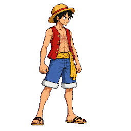
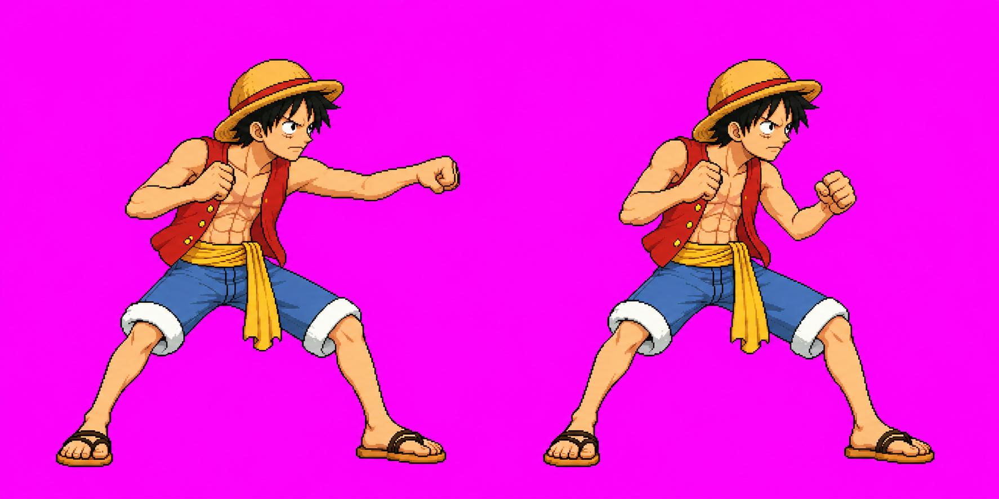
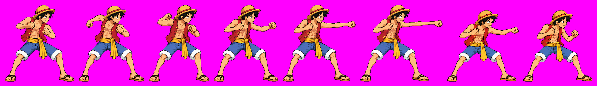
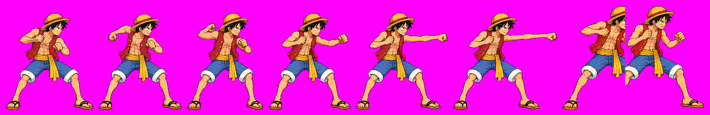
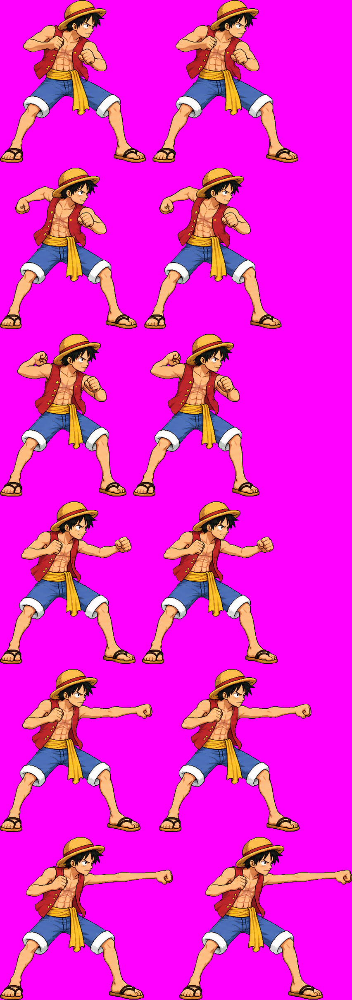

Unapproved candidate; final strict technical audit PASS. One authorized call was used (cumulative attempt 5/5). The r6 48-color preview includes special v02 for review. It does not approve the image or certify runtime contacts, timing or gameplay. Down v03 and getup v03 were separately approved via Claude relay #10 (“Approved”); this page requests a decision on special v02 only.
Candidate v02 preserves the six original attack poses as source A and adds two generated recovery poses. The stitch scaled only source B by 0.5057 from a head-probe measurement; Astra's anatomy judgment used body landmarks on the actual quantized pixels. f6 visibly retracts the arm from f5's extended reach; f7 returns to a compact guard. Review the actual f5→f6→f7 sequence below.
Loading exact quantized diagnostic frames…
The eight cells were extracted without rescaling from the strict 48-color atlas. Open each image at its native 256×256 size for pixel inspection.





Please review special v02: reply “approve luffy special v02” or give pose/design feedback. This approval applies only to this image. Existing placement exceptions remain: user-accepted run rear foot f3/f4/f7, airLight1 fist f2/f3, light3 toe f3 and light4 foot f4; Claude separately accepted beamFire arm continuation clips. Other placement/contact warnings and fallback hitboxes remain technical integration checks.
Returned source SHA-256: 5f3216c13285a791c76a6f5190c062cc2244f22264dc7505aaaea9bd710eb877
Original source-A SHA-256: 7ec7381d83ca597c9e91f6c05bc7390c241a0fc24befa9a77e506828d1a55ceb
Assembled v02 SHA-256: 362ddaf4cd82c6bf13708cb54d855e8abdad9bec541d9c7b9b4811d148085853
Final strict sheet SHA-256: e8d5ba9f95a833af82bd13441d3099d15cf44449573e15db5af404f01eb92ce0
Final strict metadata SHA-256: 7acf280f3c8a7b7b7f2ae8ec75119d8bc61c42e507faaa6ae14a1ee84816ebcd
The strict `node tools/pack-sprites.mjs luffy --quantize 48` run wrote 23 animations / 108 frames at 48 colors. Astra's final strict r6 audit PASSed all 108 actual quantized frames; the strict sheet is byte-identical to the audited diagnostic sheet, and animation maps/timings match. The isolated warn-mode pack was only used to prepare the candidate before version-bound manualQA; it is not the final result. This preview pack includes the unapproved special candidate for review.
Open final Astra audit · Open per-frame pixel hashes · Open f0–f5 preservation metrics · Open exact prompt, five input hashes and call receipt